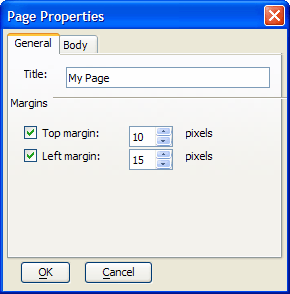
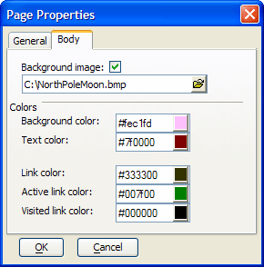

File Menu Functions
File menu functions also appear on the Standard Toolbar.
|
Function |
|
Description |
|
New |
|
Opens a new blank document in a new tab. |
|
Open |
|
Displays the Open Page dialog. The display is initially filtered to show only .A5W pages, but you can change the filter to display HTML pages, or all files. |
|
Close |
|
If you have not saved the current document, the editor asks whether you want to save it. It then closes the tab. |
|
Save |
|
Saves the contents of the current tab. If you have not saved the current document, the editor displays the Save As... dialog to define the name, format, and location of the file. |
|
|
Displays the Save As... dialog to define the name, format, and location of the file. | |
|
Revert to Saved |
|
Discards any changes made during since the last save. |
|
Execute Page |
|
Publishes and previews the page without images in the LivePreview directory. This preview is after Application Server processing. This function is enabled only when the Application Server is running. Refer to Starting and Stopping the Application Server. |
|
Preview in Browser |
|
Opens the page with your default browser. This is without Application Server processing. |
|
Opens the page in the Xbasic Script Debugger. | ||
|
|
|
Prints the page. |
|
|
Displays the Page Properties dialog, which allows you to set the page's title, margins, background image, background color, text color, and link colors. |
To save a new page in a web project:
Click File > Save As to display the Save As dialog box.
Select the project from the drop-down list box at top or click New Project to create a new project.
Optionally, click to create a new folder.
Optionally, click
 to display only recently modified files.
to display only recently modified files.Optionally, make a selection from the Files of type list box to the list of files in the current folder. The options are:
"A5W Pages (*.a5w)"
"HTML Files (*.htm;*.html)"
"All Files (*.*)"
Select an existing file or enter a File name and click Save.
To save a new page outside a web project.
Click File > Save As to display the Save As dialog box.
Select "More files" in the drop-down list box at top.
Optionally, make a selection from the Save as type list box to the list of files in the current folder. The options are:
"A5W Pages (*.a5w)"
"HTML Files (*.htm;*.html)"
"All Files (*.*)"
Optionally, click to create a new folder.
Optionally, click to navigate to a parent folder.
Select an existing file or enter a File name and click Save.
To set the page properties of your HTML page through menus:
Display the WYSIWYG tab of your HTML Editor window.
Select File > Page Properties to display the General tab of the Page Properties dialog.
Optionally, enter the name of your page in the Title field.
Optionally, check Top Margin and enter the number of pixels.
Optionally, check Left Margin and enter the number of pixels.

The entries you see above produce the following HTML code.
|
leftMargin=15 topMargin=10 > |
Display the Body tab of the dialog box.
Optionally, check Background image enter the name of an image. Click
 to navigate to and select the image.
to navigate to and select the image.Optionally, dick
 to select a color in the Background
color, Text color, Link
color, Active link color, or Visited
link color fields.
to select a color in the Background
color, Text color, Link
color, Active link color, or Visited
link color fields.

The entries you see above produce the following HTML code.
|
text=#800000 vLink=#000000 aLink=#0000ff link=#008000 bgColor=#ebffff background=C:\Wallpaper\claire_081003.jpg > |
Click OK to apply your selections or Cancel to discard them.
To debug the Xbasic code in a .A5W page:
Click to open the Debugger.
Click
 to start running the Xbasic code.
to start running the Xbasic code.Refer to Debugger Settings and Debugger Menu Commands for more information.
Limitations
Web publishing applications only.
See Also